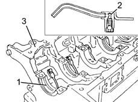

DESCRIPTION OF COMPONENTS
- Path
- Descriptions > 10 ENGINE > 1012 ENGINE CRANKCASE > 1012A CRANKCASE AND COMPONENTS > DESCRIPTION OF COMPONENTS
- Kind
- system description
- Applies to
- engines: 2.4 20V; all production periods
- Interactive page
- https://sloeber94.github.io/elrnDB-lThss/en/#/607462
Applies to: engines: 2.4 20V; all production periods
ENGINE CRANKCASE
Specifications
Function
This is the main structural part of the engine.
It is designed to house and support all the crankshaft associated components.
Type
The crankcase is made from cast iron with a high mechanical resistance.
The crankshaft is supported by means of six main journals.
The cylinders are located directly in the cylinder block and are available in three grades plus an oversize
The crankcase also houses the counter-balance shaft which is supported by means of a centre bush and a ball bearing at the front and the rear.
Special ducts in the crankcase walls allow the flow of coolant and lubrication oil.
The lower part of each cylinder contains a jet which sprays oil on the piston crown to lubricate/cool it.

- 1 - Main journals
- 2 - Jets
- 3 - Cylinder block/crankcase